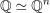
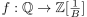
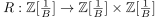
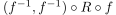
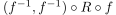
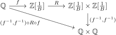
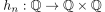
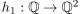
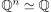
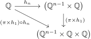

Homeomorphie der rationalen Zahlen und dem Produkt der rationalen Zahlen
1. Satz
Es gilt für die Standardtopolgien auf

1
2. Beweis
2.1. 
Nach der Aussage über die Dichtheit der Ganze Zahlen adjungiert B-1 in den rationalen Zahlen und der Ordnungsisomorphismus von einer dichten, abzählbaren Menge auf die rationalen Zahlen erhalten wir einen Homeomorphismus .
Diesen können wir mit der Reißverschluss-Bijektion von ℤ adjungiert B-1 , welcher ebenfalls ein Homeomorphismus ist, verknüpfen.
Zuletzt verknüpfen wir diese mit dem kartesische Produkt der Umkehrabbildung  .
Somit erhalten wir die Abbildung :
.
Somit erhalten wir die Abbildung :

Diese ist als verknüpfung von Homeomorphismen wieder ein Homeomorphismus
2.2. allgemeiner fall
Sei ein Homomorphismus  und  gegeben, so folgt der allgemeine Fall durch Induktion: Sei  so gilt:
